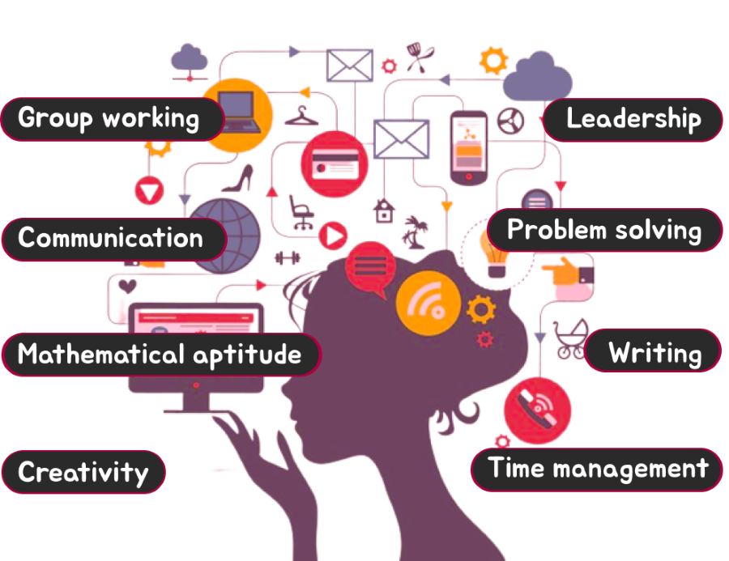

You’re warmly welcome to my portfolio, where I'm excited to let you have a look into who I am. As a passionate software engineering student, I find immense joy in the art of coding and designing. With an open mind and a knack for thinking out of the box, I relish the challenge of finding innovative solutions to complex problems. Beyond the world of programming, there's another side of me that's filled with a deep love for animals. Their enchanting presence and unwavering loyalty have captured my heart, and I cherish every opportunity to interact with these wonderful creatures.So, as you delve into my portfolio, you'll discover a fusion of my technical prowess, my open-mindedness, my adoration for animals etc. Together, let's embark on an extraordinary journey of creativity, & innovation.
Studied @ Currently studying @
C.W.W.Kannangara Central College Institute of Software Engineering
(Bsc(Hons) Computer Science in Software Engineering)
I studied at C.W.W.Kannangara Central College Matugama until grade 13. And also I’ve got many achievements in there such as zonal level competitions in several languages etc. I've successfully completed my A/Ls in maths stream in 2021.
Ordinary Level 2016 - Ordinary Level - Sinhala Medium
Advanced Level 2021 - Advanced Level - Maths Stream

